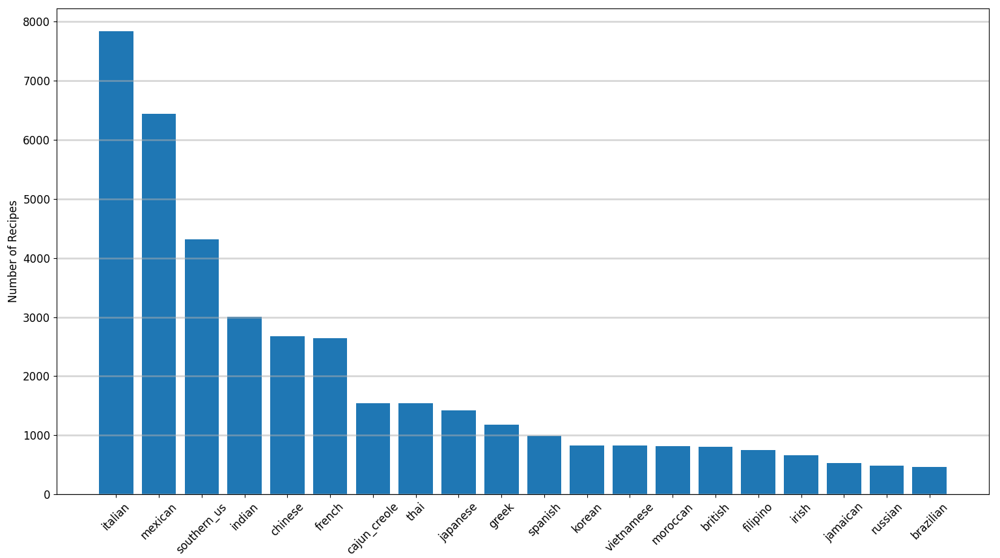
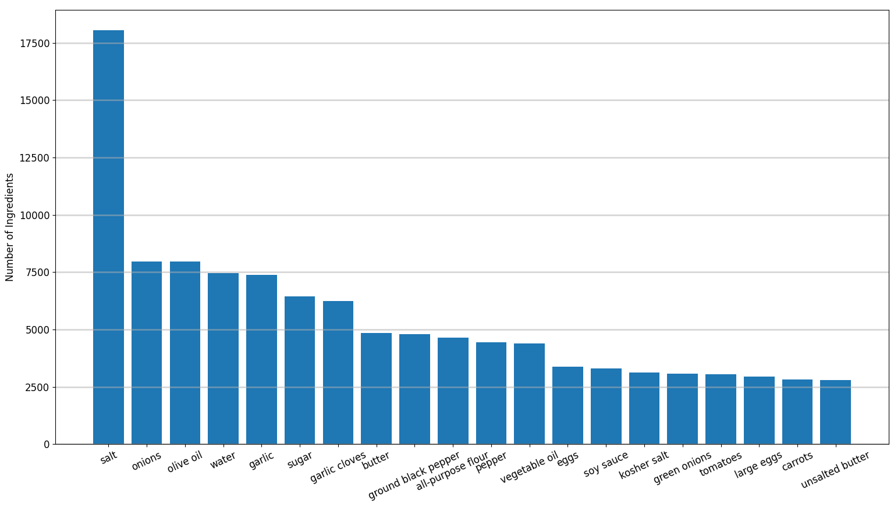
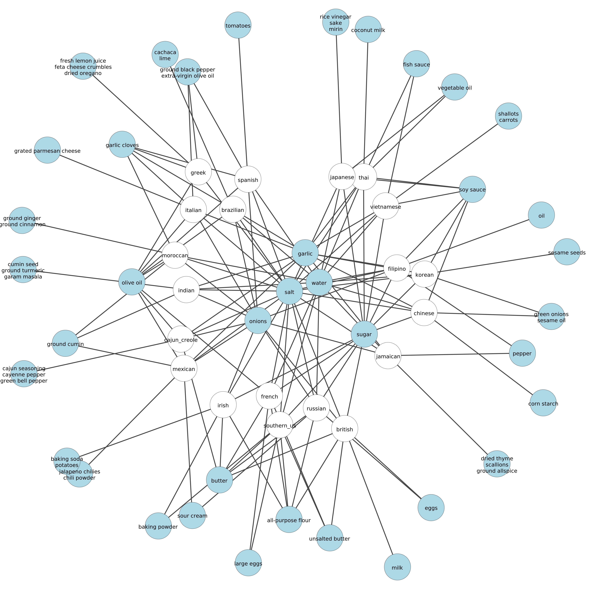
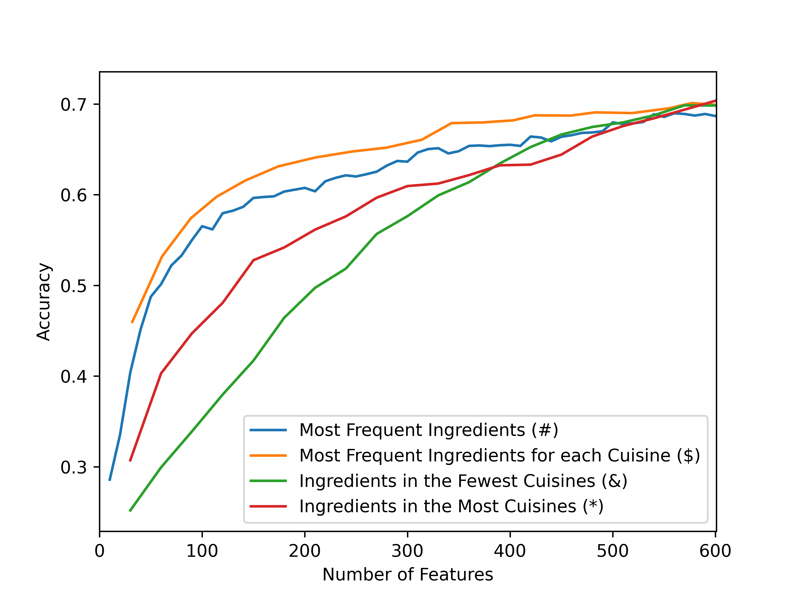

XGBoost is one of the ML models that I've frequently run across but never played around with. So this an attempt at getting familiar with the python implementation of XGBoost. Basically this involved following the docs here: https://xgboost.readthedocs.io/en/latest/. The code I wrote for this project can be found here: https://github.com/sophist0/xgboost_recipes.
I'm interested in cooking. So I decided to look for a dataset of recipes and found https://www.kaggle.com/kaggle/recipe-ingredients-dataset.
This dataset consists of recipes classified by cuisine with the recipe ingredients as features. The portion of the dataset I'm using (the Kaggle training set) consists of 39774 recipes, 20 cuisines, and 6714 unique ingredients. Arguably this dataset could use cleaning in the sense that some features could be consolidated for instance "olive oil" and "extra-virgin olive oil", on the other hand different cuisines may use different words for identical or functionally identical ingredients. I chose not to consolidate any ingredients.
The cuisines and their frequency in the dataset are given in the figure below. 
The twenty most frequent ingredients in all cuisine recipes in the dataset are given in the figure below. 
The eight most frequent ingredients of each cuisine which are not in the set of the eight most frequent ingredients of any other cuisine are given below.
| Cuisine | Ingredients |
|---|---|
| brazilian | cachaca, lime |
| british | milk |
| cajun_creole | cajun seasoning, cayenne pepper, green bell pepper |
| chinese | corn starch |
| filipino | oil |
| french | |
| greek | fresh lemon juice, feta cheese crumbles, dried oregano |
| indian | cumin seed, ground turmeric, garam masala |
| irish | baking soda, potatoes |
| italian | grated parmesan cheese |
| jamaican | dried thyme, scallions, ground allspice |
| japanese | rice vinegar, sake, mirin |
| korean | seseme seeds |
| mexican | jalapeno chilies, chili powder |
| moroccan | ground ginger, ground cinnamon |
| russian | |
| southern_us | |
| spanish | tomatoes |
| thai | coconut milk |
| vietnamese | shallots, carrots |
Below is a bipartite graph representation of subsets of the eight most frequent ingredients for each cuisine. The white nodes are the cuisines, the blue nodes are subsets ingredients, the edges indicate the subsets of each cuisines eight most ingredients. If there is more than one edge to a blue node, that nodes ingredients are in the set of the eight most frequent ingredients for each connected cuisine. For instance both Chinese and Korean recipes frequently use green onions and sesame oil.

Notice that the ingredients in the center of the graph such as garlic, onions, salt, sugar, and water are connected to most cuisines. Therefore their presence in a recipe likely tells us little about the recipes cuisine. Or more formally if all ingredient nodes represent sufficiently frequent ingredients, then highest degree nodes in the bipartite representation above likely have little power to classify recipes by cuisine. At least that's my currently baseless hypothesis.
XGBoost has a lot of parameters, see https://xgboost.readthedocs.io/en/latest/parameter.html. I chose to focus on sweeping over the following parameters which produces 216 potential models.
| Parameter | Description | Range | Default | Sweep 1 Values |
|---|---|---|---|---|
| eta | learning rate | [0,1] | 0.3 | 0.1,0.5,1 |
| gamma | min leaf loss to split a leaf | [0,inf] | 0 | 0,0.3 |
| max_depth | maximum tree depth | [0,inf] | 6 | 2,4,6 |
| lambda | L2 regulation | 1 | 0,1,3 | |
| subsample | fraction of data sampled before growing each tree | (0,1] | 1 | 0.7,1 |
| num_round | number of boosting rounds usually 2 | 2,4 |
| Model | S1M1 | S1M2 | S1M3 | S1M4 | S1M5 | S1M6 | S1M7 | S1M8 | S1M9 | S1M10 |
| Accuracy | 0.653 | 0.653 | 0.648 | 0.648 | 0.647 | 0.646 | 0.641 | 0.641 | 0.635 | 0.634 |
| eta | 0.5 | 0.5 | 0.5 | 0.5 | 0.5 | 0.5 | 0.5 | 0.5 | 0.5 | 0.5 |
| gamma | 0 | 0.3 | 0 | 0.3 | 0 | 0.3 | 0 | 0.3 | 0 | 0.3 |
| max_depth | 6 | 6 | 6 | 6 | 6 | 6 | 6 | 6 | 6 | 6 |
| lambda | 0 | 0 | 0 | 0 | 1 | 1 | 1 | 1 | 3 | 3 |
| subsample | 1 | 1 | 0.7 | 0.7 | 1 | 1 | 0.7 | 0.7 | 1 | 1 |
| num_round | 4 | 4 | 4 | 4 | 4 | 4 | 4 | 4 | 4 | 4 |
Given this parameter sweep it appears we can fix eta=0.5 and it doesn't appear gamma has a large effect so lets fix it as gamma=0. Its also tempting to set lambda=0 and subsample=1 but I'm not going to fix those values as both parameters should reduce the chance of over fitting. Finally the fact that max_depth and num_round are at the maximum of their swept ranges suggest that they should both be increased and that the model is under fitting the validation data. So lets try another round of parameter fitting sweeping over the following values.
| Parameter | Sweep 2 Values |
|---|---|
| eta | 0.5 |
| gamma | 0 |
| max_depth | 8,10,12,14 |
| lambda | 0,1 |
| subsample | 0.7,1 |
| num_round | 6,8,10,12 |
This gives 64 possible models. Again the top ten results are,
| Model | S2M1 | S2M2 | S2M3 | S2M4 | S2M5 | S2M6 | S2M7 | S2M8 | S2M9 | S2M10 |
| Accuracy | 0.720 | 0.718 | 0.717 | 0.717 | 0.714 | 0.713 | 0.713 | 0.713 | 0.713 | 0.713 |
| eta | 0.5 | 0.5 | 0.5 | 0.5 | 0.5 | 0.5 | 0.5 | 0.5 | 0.5 | 0.5 |
| gamma | 0 | 0 | 0 | 0 | 0 | 0 | 0 | 0 | 0 | 0 |
| max_depth | 14 | 12 | 14 | 14 | 14 | 12 | 10 | 12 | 12 | 14 |
| lambda | 0 | 0 | 0 | 1 | 0 | 0 | 0 | 1 | 0 | 0 |
| subsample | 1 | 1 | 0.7 | 1 | 1 | 0.7 | 1 | 1 | 1 | 0.7 |
| num_round | 12 | 12 | 12 | 12 | 10 | 12 | 12 | 12 | 10 | 10 |
Testing the models S2M1, S2M2, S2M3, and S2M4 on the testing set produces the following results, which suggests that the four models do not over fit the data as the models testing accuracies are at least as good as their validation accuracy.
| Model | S2M1 | S2M2 | S2M3 | S2M4 |
| Accuracy | 0.7297 | 0.7277 | 0.7277 | 0.7237 |
The confusion matrix for model S2M1 is
Predicted Label |
|||||||||||||||||||||
| gr | so | fi | in | ja | sp | me | it | br | th | vi | ch | ca | bra | fr | ja | ir | ko | mo | ru | ||
| Label | greek (gr) | 56 | 4 | 0 | 3 | 0 | 0 | 1 | 31 | 0 | 0 | 0 | 0 | 0 | 0 | 2 | 0 | 0 | 0 | 0 | 0 |
| southern_us (so) | 2 | 322 | 3 | 3 | 1 | 2 | 8 | 36 | 3 | 1 | 0 | 3 | 22 | 1 | 13 | 1 | 6 | 0 | 0 | 0 | |
| filipino (fi) | 0 | 4 | 37 | 2 | 1 | 1 | 2 | 7 | 1 | 1 | 2 | 7 | 0 | 1 | 0 | 0 | 1 | 1 | 0 | 0 | |
| indian (in) | 4 | 8 | 0 | 243 | 1 | 0 | 16 | 10 | 3 | 6 | 0 | 2 | 0 | 0 | 1 | 1 | 0 | 0 | 3 | 0 | |
| japanese (ja) | 0 | 5 | 3 | 2 | 28 | 0 | 2 | 1 | 2 | 0 | 0 | 0 | 0 | 0 | 2 | 0 | 0 | 0 | 0 | 1 | |
| spanish (sp) | 0 | 1 | 0 | 2 | 1 | 42 | 15 | 33 | 1 | 0 | 0 | 0 | 3 | 0 | 7 | 0 | 0 | 0 | 2 | 0 | |
| mexican (me) | 1 | 14 | 1 | 6 | 0 | 3 | 545 | 30 | 0 | 0 | 1 | 1 | 1 | 2 | 5 | 0 | 1 | 0 | 1 | 2 | |
| italian (it) | 10 | 31 | 1 | 2 | 0 | 3 | 8 | 715 | 4 | 0 | 0 | 1 | 4 | 0 | 25 | 1 | 2 | 1 | 1 | 0 | |
| british (br) | 0 | 26 | 0 | 2 | 0 | 1 | 1 | 11 | 30 | 0 | 0 | 0 | 0 | 0 | 13 | 0 | 5 | 0 | 1 | 0 | |
| thai (th) | 0 | 0 | 1 | 7 | 0 | 0 | 7 | 4 | 0 | 104 | 10 | 7 | 0 | 2 | 0 | 1 | 0 | 1 | 0 | 0 | |
| vietnamese (vi) | 1 | 0 | 2 | 2 | 0 | 0 | 1 | 3 | 0 | 20 | 57 | 6 | 0 | 0 | 0 | 1 | 0 | 2 | 0 | 0 | |
| chinese (ch) | 1 | 4 | 3 | 1 | 0 | 0 | 2 | 9 | 2 | 6 | 5 | 240 | 1 | 0 | 1 | 8 | 0 | 12 | 0 | 0 | |
| cajun_creole (ca) | 0 | 28 | 0 | 0 | 1 | 1 | 6 | 16 | 0 | 0 | 0 | 0 | 91 | 0 | 7 | 0 | 0 | 0 | 0 | 0 | |
| brazilian (bra) | 0 | 8 | 0 | 1 | 0 | 1 | 10 | 5 | 1 | 0 | 0 | 0 | 2 | 33 | 2 | 0 | 0 | 0 | 0 | 1 | |
| french (fr) | 1 | 40 | 0 | 1 | 1 | 4 | 2 | 62 | 3 | 0 | 0 | 0 | 1 | 0 | 137 | 0 | 3 | 0 | 2 | 3 | |
| japanese (ja) | 0 | 4 | 1 | 10 | 0 | 0 | 2 | 10 | 2 | 1 | 0 | 11 | 0 | 0 | 1 | 87 | 1 | 6 | 0 | 1 | |
| irish (ir) | 0 | 21 | 1 | 1 | 0 | 0 | 1 | 13 | 7 | 0 | 0 | 0 | 0 | 1 | 6 | 1 | 20 | 0 | 0 | 1 | |
| korean (ko) | 0 | 1 | 0 | 0 | 0 | 0 | 2 | 1 | 0 | 0 | 0 | 13 | 0 | 0 | 0 | 8 | 0 | 48 | 0 | 1 | |
| moroccan (mo) | 2 | 0 | 0 | 7 | 0 | 3 | 6 | 6 | 0 | 0 | 0 | 1 | 1 | 0 | 0 | 0 | 0 | 0 | 51 | 0 | |
| russian (ru) | 3 | 5 | 1 | 1 | 0 | 1 | 4 | 8 | 2 | 0 | 0 | 0 | 2 | 0 | 9 | 0 | 0 | 0 | 0 | 16 | |
Looking at the bipartite graph above I thought perhaps ingredients in most cuisines could be ignored without reducing classification power. I decided to test this and found given the figure below that I was only partially correct.
In this figure the blue line (#) represents the accuracy of model S2M1 predicting the cuisine of recipes using the most frequent ingredients in the dataset, the orange line ($) is the n most frequent ingredients in each cuisine, the green line (&) is the ingredients in the fewest cuisines that are in the set of the 100 most frequent ingredients of a cuisine, the red line (*) is the ingredients in the most cuisines that are in the set of the 100 most frequent ingredients of a cuisine.
Interestingly the orange (\$) line is strictly greater than the blue (#) line, suggesting its always better to select the most frequent n ingredients of each cuisine rather than the most frequent ingredients in the dataset. The green (&) and red (*) lines swept the fraction of ingredients selected from the orange (\$) line for n=100 from 0.05 to 1 in increments of 0.05. This implies that all three lines should converge at the right side of the graph, however there must be a bit of randomness in the model's training as this does not quite occur. But the real take away is that if the ingredients shared across the most cuisines are removed, initially it does not effect the models accuracy. So for instance perhaps removing water, which is an ingredient in all 20 cuisines, would not reduce the models accuracy. However this does not last long and as more ingredients are removed which are in many cuisine's, the models accuracy decreases substantially even falling below the red (*) line. Perhaps this is due to ingredients that are shared across a lot of cuisines being frequent ingredients, such that if 50% of them are removed a lot of recipes will have no ingredients making them impossible to classify. I have not verified this, its just a guess.